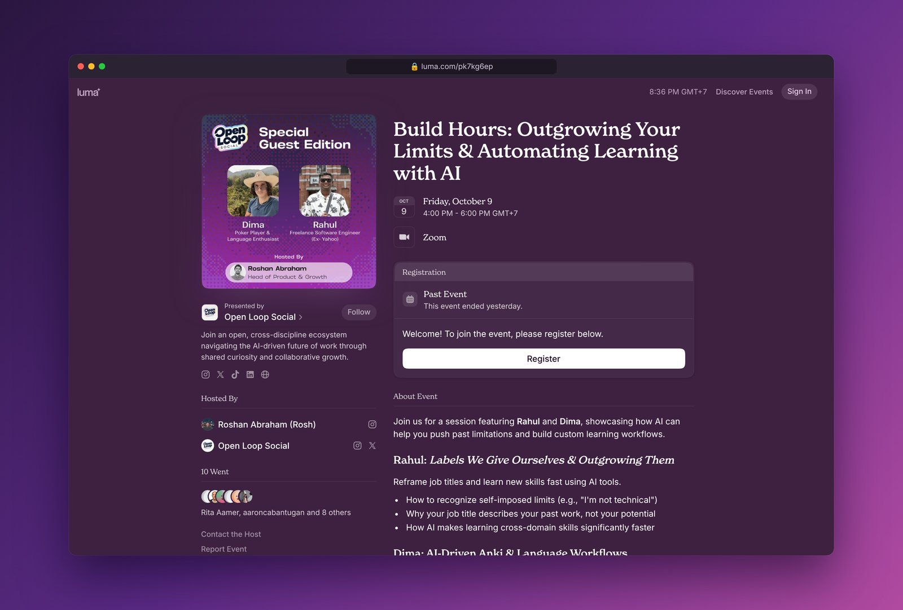

Based on my experience over the years, and the exposure I was fortunate to get, I was able to bring a change in myself. That's when I decided to talk about this, because I have seen some people struggle to come out of a given title. The topic of the talk was Labels we give ourselves, and outgrowing them.
I gave the talk at Build Hours, a special guest edition run by Open Loop Social. It was meant to happen in Manila, in the Philippines, with me joining remotely over Zoom. Heavy rain moved the whole event online in the end. I shared the session with Dima, who showed how to use AI, Anki and local LLMs to learn languages.

The talk ended with a challenge: pick one label you've given yourself and build one small thing outside it in the next 30 days. If you want help with the first step, book a call or email rahul@rr2.dev. Anything technical, free, no strings attached.
Written with help from Claude (Opus 5.5).